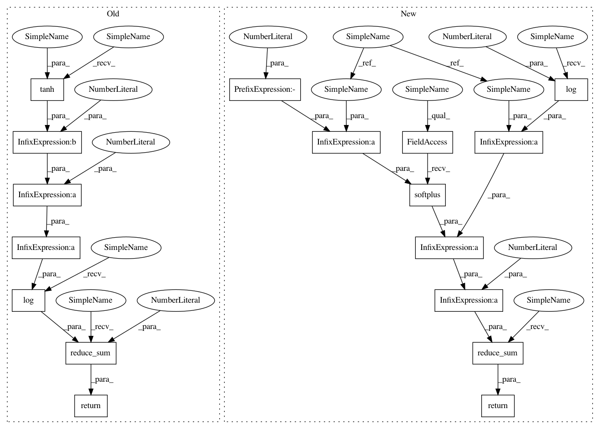

606f9cae4027b7e017d92f74ed58a116aaf59c4f,softlearning/policies/latent_space_policy.py,LatentSpacePolicy,_squash_correction,#LatentSpacePolicy#Any#,226
Before Change
def _squash_correction(self, actions):
if not self._squash: return 0
return tf.reduce_sum(tf.log(1 - tf.tanh(actions) **2 + EPS), axis=1)
// numerically stable squash correction without bias from EPS
// return tf.reduce_sum(2. * (tf.log(2.) - actions - tf.nn.softplus(-2. * actions)))
@contextmanager
After Change
// return tf.reduce_sum(tf.log(1 - tf.tanh(actions) **2 + EPS), axis=1)
// numerically stable squash correction without bias from EPS
return tf.reduce_sum(2. * (tf.log(2.) - actions - tf.nn.softplus(-2. * actions)), axis=1)
@contextmanager
def deterministic(self, set_deterministic=True, h=None):
Context manager for changing the determinism of the policy.
In pattern: SUPERPATTERN
Frequency: 3
Non-data size: 17
Instances
Project Name: rail-berkeley/softlearning
Commit Name: 606f9cae4027b7e017d92f74ed58a116aaf59c4f
Time: 2018-07-09
Author: azhou42@berkeley.edu
File Name: softlearning/policies/latent_space_policy.py
Class Name: LatentSpacePolicy
Method Name: _squash_correction
Project Name: rail-berkeley/softlearning
Commit Name: dcc34ef8cd1e55fee69eb9f764650fdbab9da18f
Time: 2018-07-18
Author: azhou42@berkeley.edu
File Name: softlearning/policies/gmm.py
Class Name: GMMPolicy
Method Name: _squash_correction
Project Name: rail-berkeley/softlearning
Commit Name: 910e4f89faf44e46c06eecc80aab3dff3ca1c5dc
Time: 2018-07-03
Author: azhou42@berkeley.edu
File Name: softlearning/policies/gaussian_policy.py
Class Name: GaussianPolicy
Method Name: _squash_correction
Project Name: rail-berkeley/softlearning
Commit Name: 606f9cae4027b7e017d92f74ed58a116aaf59c4f
Time: 2018-07-09
Author: azhou42@berkeley.edu
File Name: softlearning/policies/latent_space_policy.py
Class Name: LatentSpacePolicy
Method Name: _squash_correction